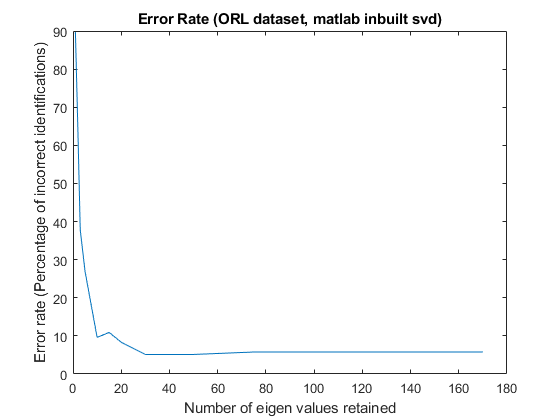
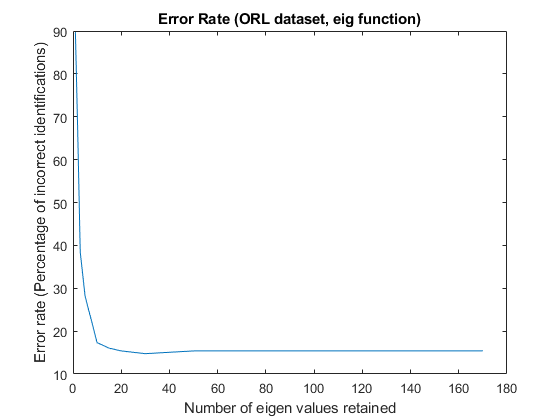
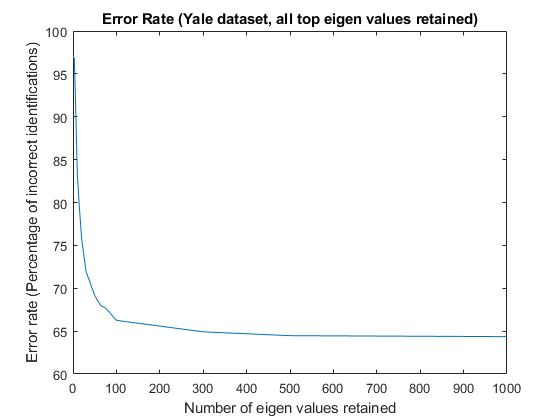
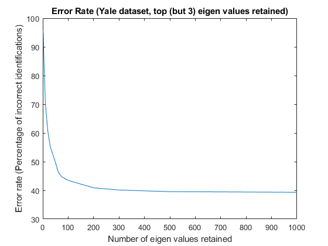

Contents
- Question 4 Report
- ORL Dataset Face Recognition
- Error Rate (ORL Dataset) with Matlab's svd function
- Error rate (ORL Dataset) using eig function
- Yale Dataset Face Recognition
- Error Rate (Yale Dataset) with top eigen values
- Error Rate (Yale Dataset) with top (but 3) eigen values
- References (last accessed 4-11-2020)
Question 4 Report
ORL Dataset Face Recognition
A combined image vector space as created across all training images (as opposed to seperate eigen vectors per individual) After normalising 'U' generated by Matlab's svd function, we create a search space by premultiplying the training image column vectors. The query image is then mapped to this search space of eigen coefficients by premultiplying with U and then knnsearch is used to evaluate which person the query image may correspond to. The resultant recognition is compared with the true identity, and we report our error rate in number of missed identifications/total number of test images.
Error Rate (ORL Dataset) with Matlab's svd function
Miminum identification errors were observed when top 50 eigen values were retained
Error rate (ORL Dataset) using eig function
Yale Dataset Face Recognition
An initial hurdle was faced due to the dataset being incomplete, we anticipated 64 images for each individual but instead for some individuals we had 60-63 images (B10,12,13 - 60, B16 - 62, B15,17,18 - 63 images respectively) This data set was evaluated using matlab's inbuilt SVD function, retaining either top eigen vectors, or in the second case retaining top eigen values except the top 3 eigen vectors.
Error Rate (Yale Dataset) with top eigen values
When retaining all Eigen Values, performance on the given test image test is not very good, and performance keeps improving even when 1000 eigen vectors are retained, this is unlike the expected behaviour of a minima (concavity) in the shape of error vs. number of eigen values retained. This Performance prompts the question whether the largest eigen values hold meaning, and we test that in the next section where top eigen values excluding top 3 eigen values are used to identify the faces.
Error Rate (Yale Dataset) with top (but 3) eigen values
Performance improves substantially once top eigen values are ignored as can be seen in the plot below, allowing us to hit 40% accuracy.
References (last accessed 4-11-2020)
https://in.mathworks.com/matlabcentral/answers/341843-load-files-from-relative-path
https://in.mathworks.com/matlabcentral/answers/40018-delete-zeros-rows-and-columns
Elapsed time is 102.103022 seconds.